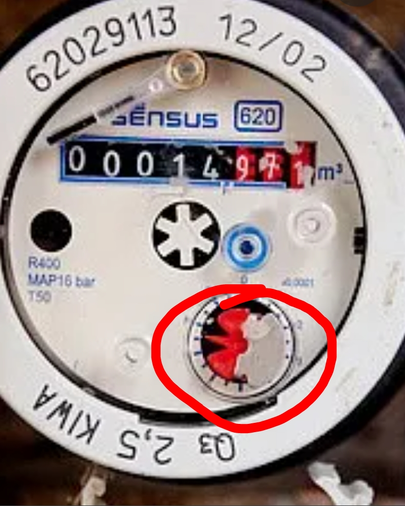

Troubleshooting
Check also the readme file in the repository of the S0tool on GitHub for more information: S0tool GitHub.
Update Function: Updating Through ESPHome Addon
- In HomeAssistant, open the ESPHome addon.
- Find the sensor (S0tool) you want to update and click the three dots in the bottom right.
- Select “Validate” from the list.
- Once the validation completes, click “Install” in the bottom right.
Drivers
If the serial port is not showing up, your computer might be missing the drivers for the USB serial chip used in your ESP device. These drivers work for most ESP devices:
Blueprint for Update Notifications
With this, you can create an automation that will notify you when a new version is online on GitHub. You must have added all the above sensors.

Advanced Users
- The device is adoptable in the ESPHome dashboard.
- The YAML configuration is available on GitHub.
Types of Water Meters with NPN Sensors
The following table lists common water meters compatible with NPN sensors:
| Brand | Model | Compatibility | Location |
|---|---|---|---|
| Elster | V200 | Compatible | NL |
| Itron | Aquadis+ | Compatible | NL |
| Sensus | 620 | Compatible | NL |
| Maddalena | CD SD Plus | Compatible | BE |
| Actaris | Single-Jet | Compatible | NL |
| Zenner | MNK-RP-N | Compatible | DE |
| Kamstrup | Multical 21 | Compatible | EU |
| Diehl | Hydrus | Compatible | EU |
If you know more compatible water meters, please contribute to the discussion on GitHub: Add to the list .
Watermeter and S0 Port in Energy Dashboard
As of Home Assistant version 2022.11.X, you can effortlessly integrate your water meter into the energy dashboard using the S0tool from version v22.10.20. The S0 port (D5) is also compatible with heating units, solar power systems, and any devices equipped with an S0 port.
| Water & Energy Dashboard | S0tool Dashboard |
|---|---|
 |
 |

Setup Your Water Meter
In the energy dashboard, look for watermeter stand to add your water usage metrics.
For S0 port usage, search for Totaal opgebracht to monitor metrics from appliances or energy
systems using S0 connectivity.
Changing Total Readings
Use the following links to adjust your total readings for various sensors and meters:
-
 Water Counter: D2
Water Counter: D2
-
S0 Port of kWh Meter: D5
-
Find your readings and reset them with a Calibration Service Call
Advanced Configuration
If you want to dive deeper into customizing your configuration, refer to the official ESPHome documentation. You can set up automations based on your water and energy consumption data for better resource management.
For Problems or Solutions
Submit a Pull Request or report Issues.
For more information about the code, visit the GitHub repository.
For more information about the S0tool, visit my (Dutch) website.